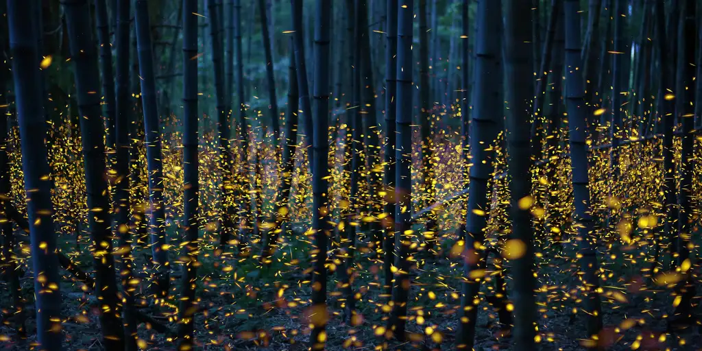
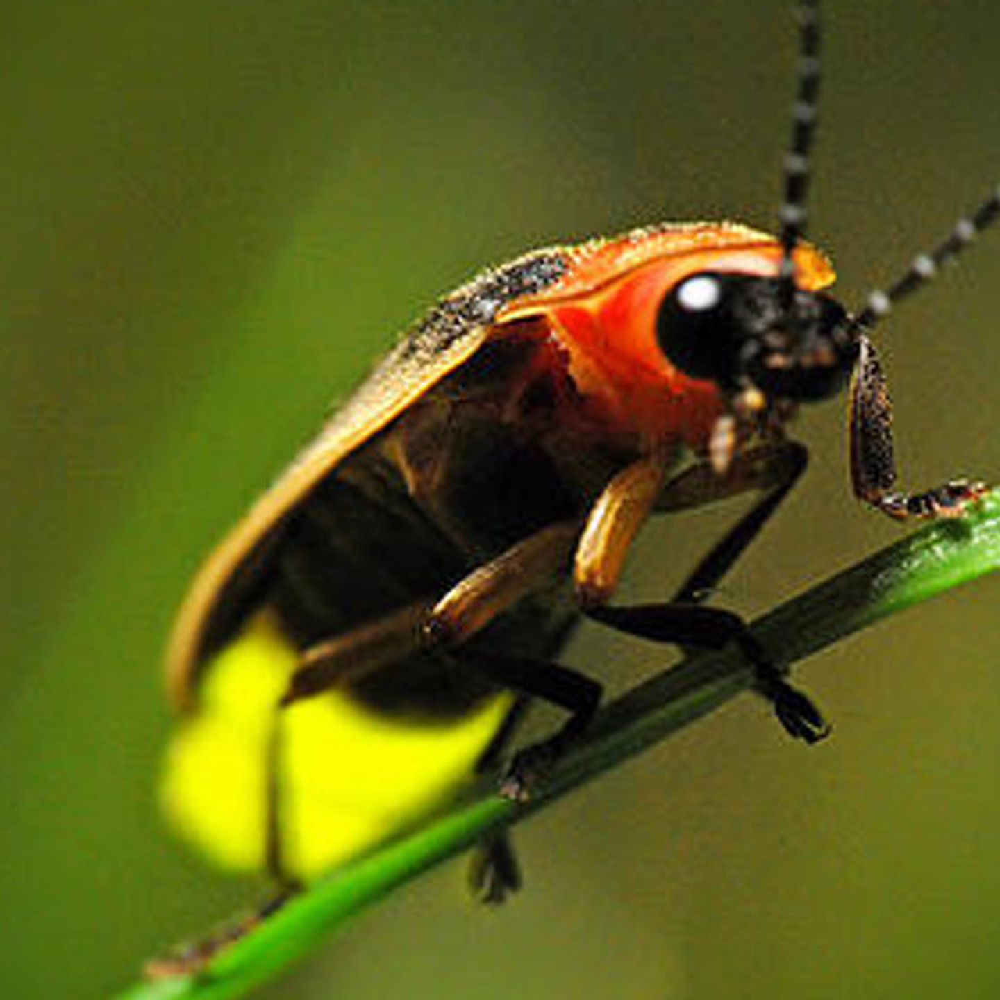
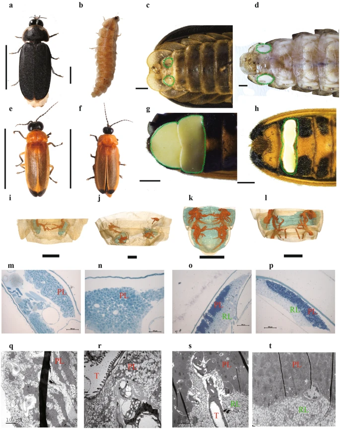
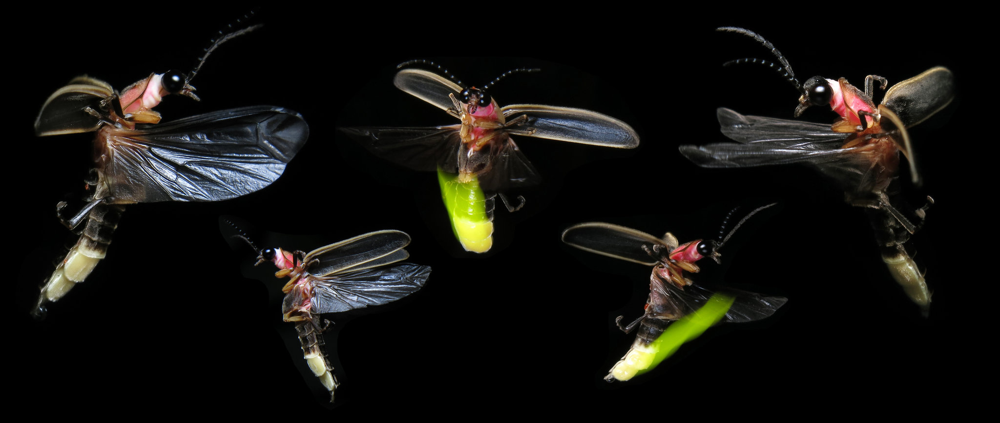

Fireflies
Fireflies light up the night with their enchanting, bioluminescent glow. Their rhythmic flashes create a mesmerizing dance in the twilight hours.
Fireflies, or lightning bugs, are winged beetles known for their bioluminescence. Found in warm environments, they use light to attract mates and prey. Light patterns and colors vary by species. Their glow is due to a chemical reaction in their lower abdomen involving luciferin, luciferase, and oxygen. Fireflies are popular in many cultures for their enchanting nighttime displays.
Firefly larvae, often called glowworms, also produce light. They inhabit moist soil or leaf litter, preying on smaller insects. Fireflies face habitat loss and light pollution, threatening their populations globally.
Lampyridae
Lampyridae
Lampyridae, commonly known as lightning bugs or fireflies, are nocturnal beetles famous for their bioluminescent abdomens. Their flashing light patterns are used primarily for mating and communication during the s ummer months. These enchanting insects are found in diverse habitats worldwide, adding a magical glow to warm summer evenings.
Fireflies are part of the Lampyridae family, comprising over 2,000 species. They communicate using distinct light patterns to identify potential mates within their species. Some species synchronize their flashes, creating stunning natural light shows. Firefly populations are indicators of healthy ecosystems. Conservation efforts are increasingly important to protect these luminous insects from environmental threats.
Fireflies are bioluminescent insects, lighting up warm nights with their enchanting glow. Their mesmerizing flashes communicate and attract mates, creating a magical spectacle in nature's twilight.Bioluminescence
Bioluminescence
Recent studies reveal fireflies use bioluminescence not just for mating but also for deterring predators. Research shows their light patterns vary significantly across species, influenced by environmental factors. Genetic analysis uncovers diverse bioluminescent pathways, highlighting evolutionary adaptability. Additionally, firefly populations are declining due to habitat loss and light pollution, prompting conservation efforts to preserve these luminous insects.
Communication
Communication
Fireflies have a unique way of communicating using bioluminescence. Recent studies reveal that some species can synchronize their flashes in a large group, creating a stunning, unified light display. This synchronization is believed to be a form of cooperative behavior to attract mates more efficiently, a phenomenon still not fully understood by scientists.